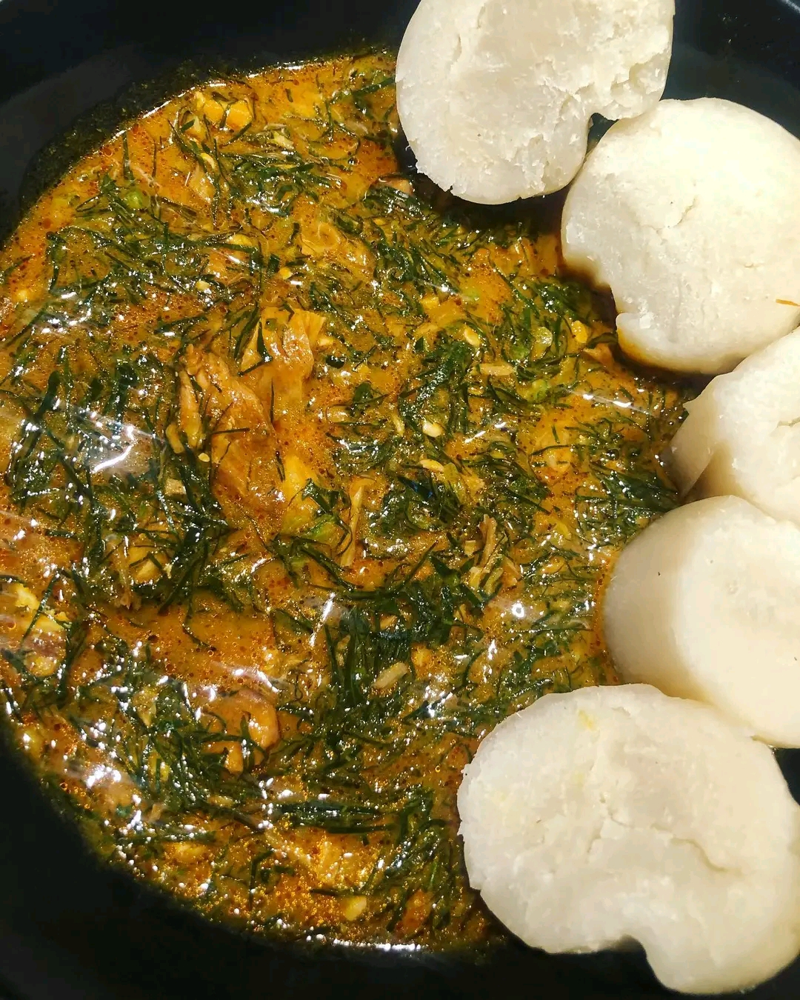

Catégories

Fumbua Kwanga (Afrique)
-
Ingrédients :
- 500g de viande de boeuf
- 2 oignons
- 3 tomates
- 1 poivron
- Épices (sel, poivre, paprika)
-
Instructions :
- Coupez la viande en morceaux et faites-la revenir dans une poêle.
- Ajoutez les oignons émincés et faites cuire jusqu'à ce qu'ils soient dorés.
- Incorporez les tomates et le poivron coupés en dés.
- Assaisonnez avec les épices et laissez mijoter pendant 30 minutes.

Spaghetti Carbonara (Europe)
-
Ingrédients :
- 400g de spaghetti
- 150g de pancetta
- 2 œufs
- 50g de parmesan
- Sel, poivre
-
Instructions :
- Faites cuire les pâtes dans l'eau bouillante salée.
- Faites revenir la pancetta dans une poêle.
- Mélangez les œufs et le parmesan dans un bol.
- Ajoutez les pâtes et la pancetta, puis le mélange œufs/parmesan hors du feu.
- Assaisonnez et servez chaud.

Poulet Teriyaki (Asie)
-
Ingrédients :
- 2 filets de poulet
- 4 c. à soupe de sauce soja
- 2 c. à soupe de sucre
- 1 c. à soupe de mirin
- Graines de sésame
-
Instructions :
- Mélangez la sauce soja, le sucre et le mirin.
- Faites mariner le poulet 15 minutes.
- Faites cuire le poulet dans une poêle, ajoutez la marinade et laissez caraméliser.
- Saupoudrez de graines de sésame et servez avec du riz.

Burger Maison (Amérique)
-
Ingrédients :
- 2 pains à burger
- 2 steaks hachés
- 2 tranches de cheddar
- Salade, tomate, oignon
- Sauce au choix
-
Instructions :
- Faites cuire les steaks à la poêle.
- Faites griller les pains.
- Montez le burger avec la salade, la tomate, l’oignon, le steak et le cheddar.
- Ajoutez la sauce et refermez le burger.
Pavlova (Océanie)
-
Ingrédients :
- 4 blancs d’œufs
- 200g de sucre
- 1 c. à café de vinaigre blanc
- 200ml de crème liquide
- Fruits frais (kiwi, fraise, mangue)
-
Instructions :
- Montez les blancs en neige, ajoutez le sucre et le vinaigre.
- Formez un disque sur une plaque et enfournez 1h à 120°C.
- Montez la crème en chantilly.
- Garnissez la meringue de chantilly et de fruits frais.